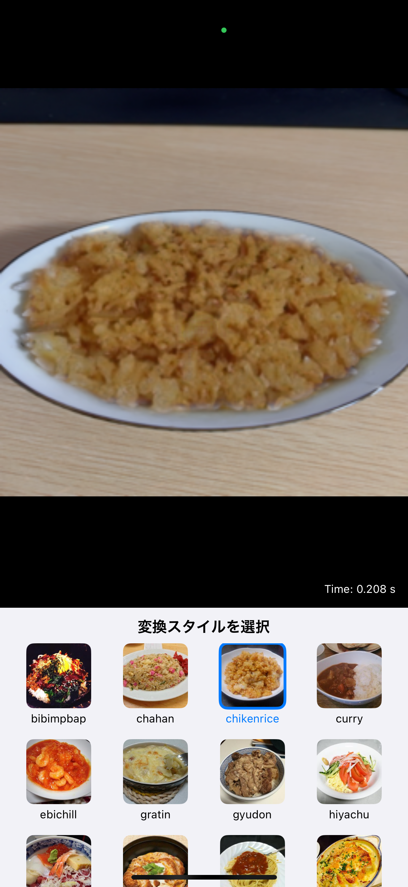
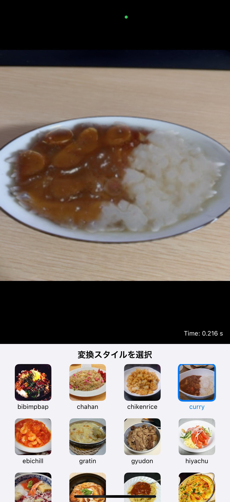

AIがあなたの食事を魔法のように変身させます
カメラで撮影した食事をリアルタイムで別の料理に変換します。
カレー、ラーメン、ピザなど、22種類の料理スタイルから選択可能です。
気に入った変換結果を簡単に保存できます。


最先端の画像変換技術を使用して、高品質な変換結果を実現しています。
食事部分の正確な検出と分離を実現するセグメンテーション技術を使用しています。
あなたの食事を魔法のように変身させてみませんか？